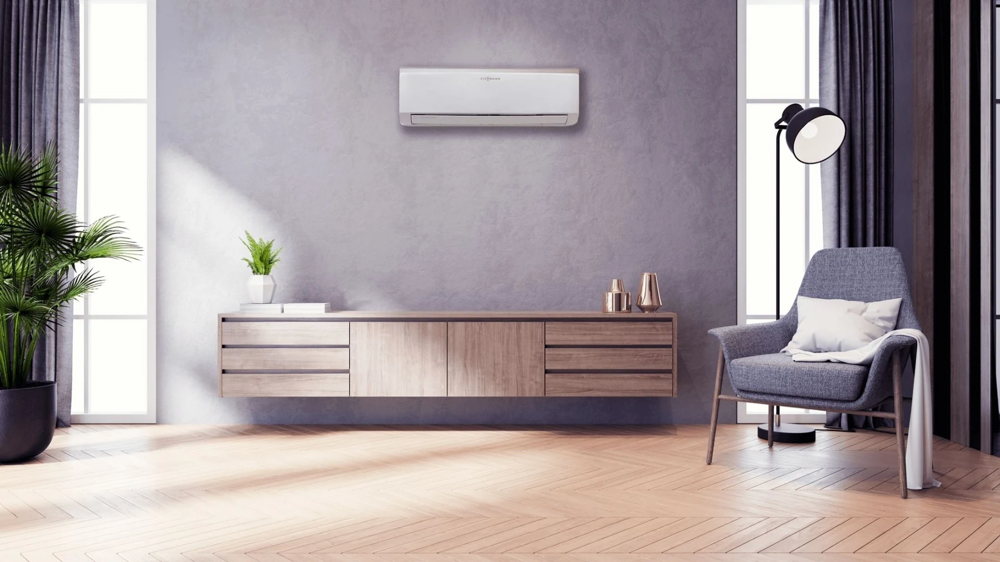

INKOM / KLIMA-UREĐAJI
Prijatna temperatura.
Tokom cele godine.
Klimatizacija stambenih i poslovnih prostora. LG, Gree, Viessmann i Toshiba program.
Istražite kategorijuPREGLED / KLIMA-UREĐAJI
Uređaj prilagođen prostoru.
Površina je samo polazna tačka. Za izbor su važni i izolacija, visina prostorije, staklene površine, osunčanost i broj korisnika.
01 / REŽIM RADA
Režim rada
- Hlađenje
- Grejanje
02 / KOMFOR
Komfor
- Nivo buke
- Strujanje vazduha
- Upravljanje
03 / PRIPREMA
Priprema upita
- Površina i visina
- Izolacija
- Prozori i sunce
- Namena prostora